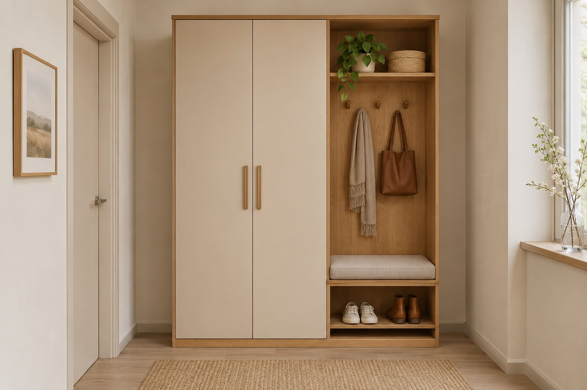

Шкаф для прихожей «Лайт»
Закрытая секция и открытая ниша

Высокая закрытая секция подходит для верхней одежды, а открытая ниша оставляет под рукой обувь и сумку. Скамья и нижняя полка входят в одну композицию. Глубина шкафа подбирается с учётом ширины коридора и открывания входной двери.
Характеристики
- Конфигурация
- Закрытая секция и открытая ниша
- Размещение
- Вдоль стены в прихожей
- Двери
- Распашные
- Наполнение
- Секция для одежды, открытая ниша и место для обуви
Возможные материалы
- Корпус из ЛДСП
- Песочные фасады из матового МДФ
- Панели с фактурой дуба для открытой ниши
Преимущества
- Закрытое хранение верхней одежды
- Место для переобувания рядом с обувной полкой